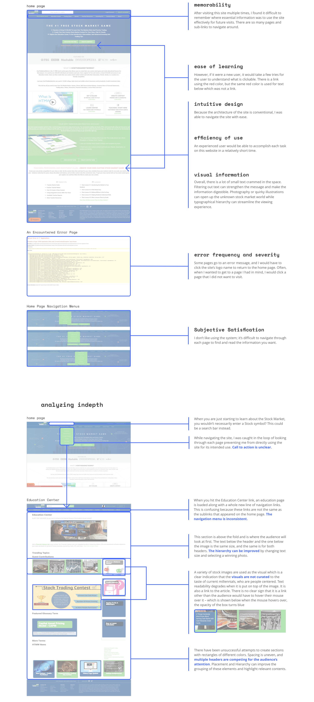
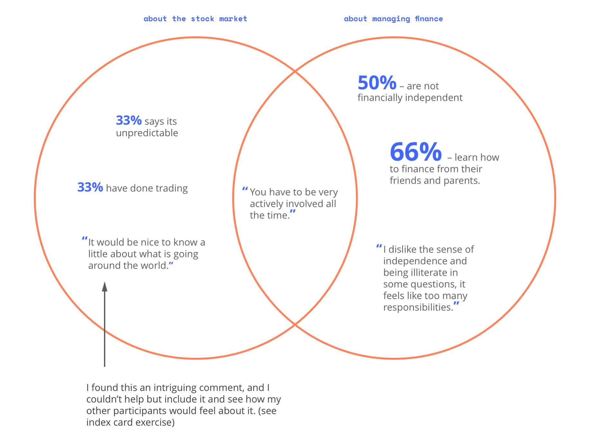
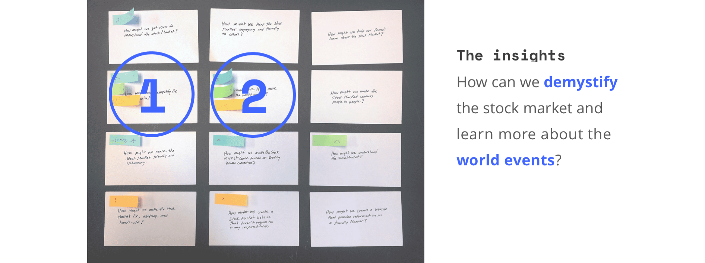
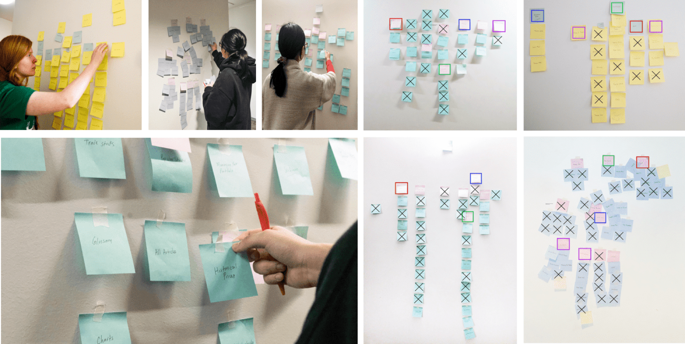
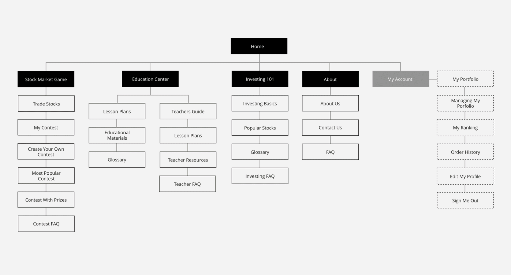
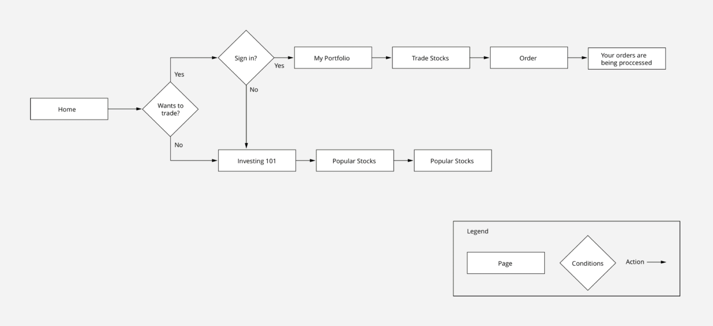
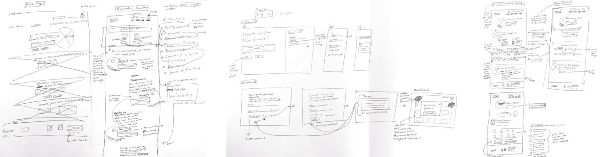
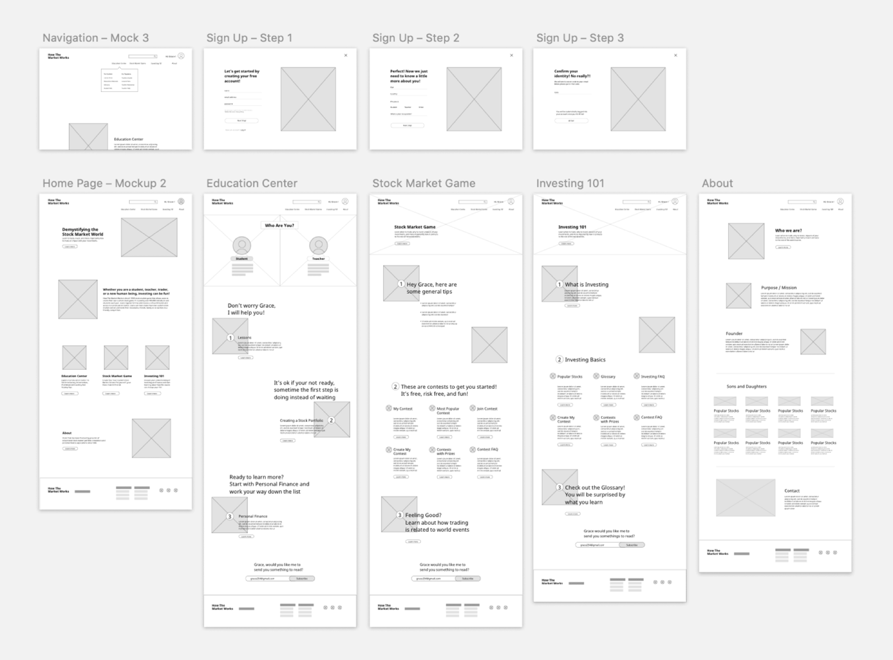
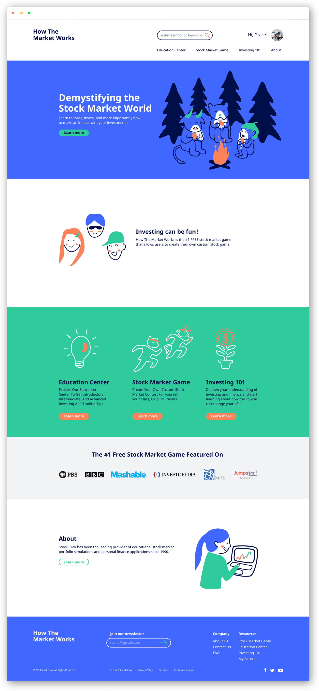
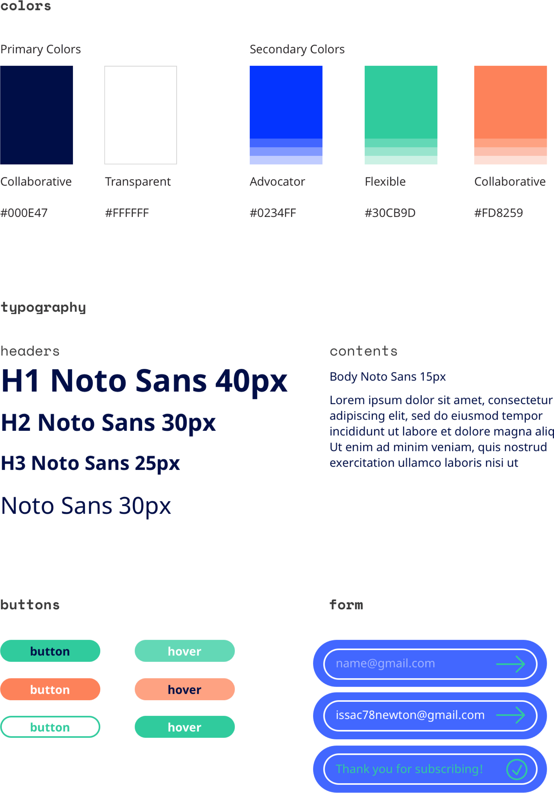

Overview
How The Market Works is an educational site that provides resources for people to learn how to invest and manage a portfolio of stocks, bonds, and mutual funds. Users can discover and trade through a real-time stock market game, simulation, or virtual trading. decluttered the website and redesigned it to have a fresher color palette and organic illustrations.
Team: Solo
Type: UI/UX, Web Design, Illustration
Date: Fall 2018
Tools: Sketch, InVision
Process

Challenge
My goals are to create a (1) clutter-free and engaging website that (2) demystify the stock market and enable users to learn more about (3) world events.
Research
I began by examining and exploring the website recording my experiences and asking myself initial questions as preparation for usability testing.
I ask myself these 5 W questions – What was my intention, when am I on the site, where would I find the stock market, why are there so many information, are they neccessary, who would look at the site, and how do I navigate the site?
I used these questions as an ice-breaker to the next step
Defining problems
I evaluated the current How the Market Works website with the usability guidline.

Defining problems
The questions I asked myself above are used to inform my decisions on what questions to ask my interviewees. I interviewed 6 students about their thoughts and experiences with managing money and knowledge they have on the stock market, and I found it was interesting to hear what they have to say.
So, what are the people saying?

Ideation
On each card, I wrote How Might We questions to brainstorm ways to address user's pain points and find the problem space.
Three participants anonymously voted (with the same colored stick notes) for the top three questions that resonated with them.

Organizing website architecture
How can we demystify the stock market and learn more about world events? I wrote down the website's navigation contents on each post-its and observed how people categorized and group topics and ideas. Understanding how people organize unfamilar information crucial to developing the flow of the website.

Site map

User flow
Showing how new users & users familar with the stock market navigate the site.

Sketch process

Prototype
I mocked up an iteration of wireframes below and prototyped it on InVision which I invited several users to participate in the initial user testing.
Try the prototype here!

Design
A simple and clean web layout will help new users to navigate the site. It is recognizable, not cluttered, and especially digestible for the users.

Design style guide
While referencing the current website, I selected fresher and hip colors and an adaptable typeface that welcomes language translations.

Reflection
I started this independent project roughly the same time when I was working on Impact Lab's web design. Because of the timing, the experience and knowledge I gained from this project helped me to lead and assist other designers for the Impact Lab's project. This project drove me to utilize my time efficiently and be proactive when searching for participants to engage in the user research and interview process.